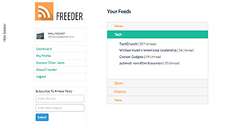

ABOUT WDI
Web Development Immersive
WDI is General Assembly’s Web Development Immersive track. Think of it as bootcamp. We certainly have. To us, immersive means all day, every day, weekends and weeknights, for 12 weeks straight. Fifteen students, completely different backgrounds, all retrained as web developers.
Here is what we’ve accomplished.

HTML/CSS
We’ve covered front-end languages like HTML and CSS, HAML and SASS, and responsive design to create beautiful and intuitive layouts.

RUBY ON RAILS
We started with pure Ruby and OOP, then moved into Sinatra and Ruby on Rails, incorporating gems, RegEx, and open-source software.

JS/JQUERY/AJAX
We dived into Javascript, progressing with AJAX, JQuery, and Coffeescript, experimenting with APIs, libraries like Underscore and Ember, and testing with Jasmine.

THE FINALE
Pair programming, databases, computer science, version control, algorithms, refactoring, TDD with Rspec and so much more to bring it all together.
MEET THE DEVELOPERS
Software Engineers in the Making
ADAM RAIS
adamgoodapp.com
A professional drummer with a business background, Adam first got into coding as a hobby. By the time he decided to join the WDI course, he had already developed impressive front-end skills and had spent some quality time with iOS. He is now ready to take over the world with his programming powers
ANDREA KENNEDY
adamgoodapp.com
Andrea has a background in the arts, with an MPhil in the History of Science from Cambridge University. Prior to General Assembly, she worked as a freelance historical researcher for English Heritage, compiling information for exhibitions.

ANKOOR PATEL
adamgoodapp.com
Ankoor loves science. He also loves tech. He especially loves how both are changing the world. Prior to joining WDI, Ankoor was a researcher in computational materials science, investigating optical and electronic materials. As an active member of London's social enterprise sector, he started helping newly created organizations with their web development needs. Nothing makes Ankoor happier than finding elegant solutions to complex problems.
ANNA HENDRE
adamgoodapp.com
Prior to joining WDI, Anna studied economics in Italy. Anna loves cats, reading and new experiences - and while cats were not as heavily featured as she hoped during the course, new experiences are exactly what WDI provided. Ruby wasn't the only language that Anna mastered: she also saw these twelve weeks as an opportunity to improve her English. She is moving to London and eager to find a job in the tech field, ideally with a fashion company.
Britney Jo Ludkowski
britneyjo.com
Chicago-born, Austin-based and passport-driven, Britney Jo flew over the pond to join WDI. She previously worked in marketing for a telecommunications company and also as a freelance graphic designer. By merging her design background with her newly acquired coding skills, Britney Jo can not only make things beautiful, but also make them function - and function well.
CJ Ponti
britneyjo.com
Born and raised in New York City, CJ picked up programming in high school and never really stopped. After studying finance and economics in college, he then went on to work in finance, real estate and fashion. Prior to joining WDI, CJ spent a year in France, actively learning about Python, French, bread and cheese. There are two things that CJ loves above all and talks about with great passion: quantum mechanics and kittens.
Emile Denichaud
britneyjo.com
Emile joined the WDI program with the goal of engineering teams within the tech sphere. He believes that new and traditional media work in harmony to create compelling narratives. Exciting things happen when aesthetics are communicated digitally in a dynamic & innovative way. Previously, Emile ran a boutique creative agency in Hong Kong & Tokyo.
James Elliott
britneyjo.com
Prior to joining the course, James worked in investment banking and commodities trading. His interest in tech and startups was ignited after running and managing a sales team of 6 people for an e-commerce startup in London. James' experience at WDI left him wanting more, and he is now looking forward to honing his new coding knowledge through a technical apprenticeship or in a business development/marketing role that incorporates programming.
James Poulter
jamesroypoulter.com
James is a former chartered accountant at Ernst & Young and founder of a cloud-based education platform, Unilibri. It failed. But James' love for startups and social enterprise didn't falter. A frequent hackathon attendee, shrewd networker, previous advisor at the Bright Ideas Trust and current school governor, James is looking for a role as a developer where he can build on the skills he developed with WDI. More than anything, James wants to build amazing things and make an impact.
Jarkyn S
jamesroypoulter.com
After several years in client facing roles within marketing and product development, Jarkyn grew tired of watching developers have all the fun. She decided it was time to join them and therefore, has equipped herself with skills in both front-end and back-end coding through WDI. Passionate about UI/UX, design, cycling and yoga, Jarkyn is looking forward to spending days translating great ideas into great code.
Julien Deslangles-Blanch
deslangles.com
After a stint in diplomacy, Julien spent a few years advising multinationals on how to successfully expand their activities in Asia. While working with exciting tech companies on equally exciting projects, he decided to make a full transition into the tech field. A tech aficionado, lifelong expat and hot chocolate enthusiast, Julien loves languages; as if speaking a whole bunch of them wasn't enough, Julien joined WDI to learn a few more - this time of the programming type. And he's had such a great time coding that he will be back to teach the next WDI at General Assembly.After a stint in diplomacy, Julien spent a few years advising multinationals on how to successfully expand their activities in Asia. While working with exciting tech companies on equally exciting projects, he decided to make a full transition into the tech field. A tech aficionado, lifelong expat and hot chocolate enthusiast, Julien loves languages; as if speaking a whole bunch of them wasn't enough, Julien joined WDI to learn a few more - this time of the programming type. And he's had such a great time coding that he will be back to teach the next WDI at General Assembly.
Luke Robertson
jamesroypoulter.com
Luke initially studied Physics at Oxford University and graduated with a first class Masters degree. He then enjoyed a successful twelve years in equity research sales, before deciding to shift direction towards his underlying passions: tech and innovation. Luke elected to join the WDI program to build coding skills and fluency in full stack web development, and has loved every minute of it. His experience in sales and relationship management maps directly on to business development roles in the tech space.
Salman Khalifa
jamesroypoulter.com
For as long as he can remember, Salman has had an interest in programming. With a background in Computer Science, Salman flew from Bahrain to join WDI and expand his knowledge in web technologies. He has especially enjoyed the nurturing environment this program provided, and how much he has learnt about himself and working with others. Salman intends to use the momentum this course has built to constantly push himself and develop awesome stuff.
Stewart Scougall
scougs.com
Prior to joining WDI, Stewart was born, raised, married, and employed in Edinburgh, Scotland. A project manager by trade, he even has an MBA to prove that he's followed the traditional big-business career path. He is now looking to combine past skills with those he's learned over the course of WDI to do something awesome! Passionate about good coffee, Stewart is also currently working on launching a social enterprise coffee project in Haiti.
Will McVay
scougs.com
Will studied philosophy at Durham University, which has only subsequently come in use in the context of the pub debate! Following a number of years at the Ministry of Justice, and then as a partner in a start-up physical commodities business, Will is now embarking on his third career in the exciting world of web development.. Outside of work, he enjoys music (listening), cricket (watching), standup comedy (laughing) and single-malt scotch (drinking).
Featured Projects
Subtitle
Practice makes perfect, so we put our skills to the test. Project 1, was an independent assignment: Music sharing app, GA scheduler or a Tic Tac Toe gaming platform? For Project 2 we teamed up in threes to create far more complex sites: an RSS feeder, a photo sharing app, a "cheerup" tweeting site, a dating app and a wifi sharing service. For final projects we could work alone or in groups and on the topics of our choice. Here’s just a small selection of some of the awesome things we’ve produced.

UNIFI
Add and share wifi-networks with your friends, and find new ones to add to your collection. Never be without wifi again.
Luke Robertson, Andrea Kennedy & Emile Denichaud

CHEERUPS
Cheerup (n) [cheer-up] A snippet of life that will make you smile
Add and share cheerups in the community to make someone's day or improve your own.
Ankoor Patel, Adam Rais & James Elliot

CHEERUPS
Picture sharing made beautiful.
Julien Deslangles, Britney Jo Ludkowski and Anna Hendre

FREEDER
An RSS/Atom reader personalized for your interests.
Salman Khalifa, Stewart Scougall & Will McVay

HELLO
Casual dating site for IT professionals.
CJ Ponti, James Poulter & Jarkyn Soltobaeva
HELLO
Casual dating site for IT professionals.
CJ Ponti, James Poulter & Jarkyn Soltobaeva
FREEDER
An RSS/Atom reader personalized for your interests.
Salman Khalifa, Stewart Scougall & Will McVay
HELLO
Casual dating site for IT professionals.
CJ Ponti, James Poulter & Jarkyn Soltobaeva
HELLO
Casual dating site for IT professionals.
CJ Ponti, James Poulter & Jarkyn Soltobaeva
THE INSTRUCTOR TEAM
Learning from the best
Breaking down complex topics for beginners is a tough task, but our instructors made it seem easy. A big thank you to all four of them who detangled our spaghetti code, put up with our ranting, whinging, crying, and incessant questions, and for all the laughter, beers, love and support over those oh so long, but much too short, three months spent together.
GERAUD MATHE
A self-taught developer, Geraud has over 7 years experience working with Rails. He created his own company in Paris, and has been freelancing for over a year. He specializes in Rails, testing and javascript.
KIM SZELONG
Kim has a HND in Interactive Multimedia Creation and a BSC in Multimedia Technology. She is a graduate of General Assembly London's first WDI course and was kept on as a TA for the June session. She is starting her new job as a junior developer at Adaptive Labs in September 2013.
JAMES WILLOCK
James is a designer and developer, with previous work experience at Ubuntu, WorldSkills and Edelman. He is passionate about interaction design and visual communication and has taught several courses at General Assembly.
MICHAEL PAVLING
Michael has been working with web development technology since 1999, and for the last six years has specialized in Ruby and Rails. He has extensive experience teaching beginners and is also a qualified instructor in skiing and martial arts.
This site was a group effort, created by the students.
Designers: Andrea Kennedy & Britney Jo Ludkowski
Copywriters: Julien Deslangles & Andrea Kennedy
Developers: Ankoor Patel & Adam Rais
Photography: Ankoor Patel and [PHOTOGRAPHER NAME], edited by Emile Denichaud